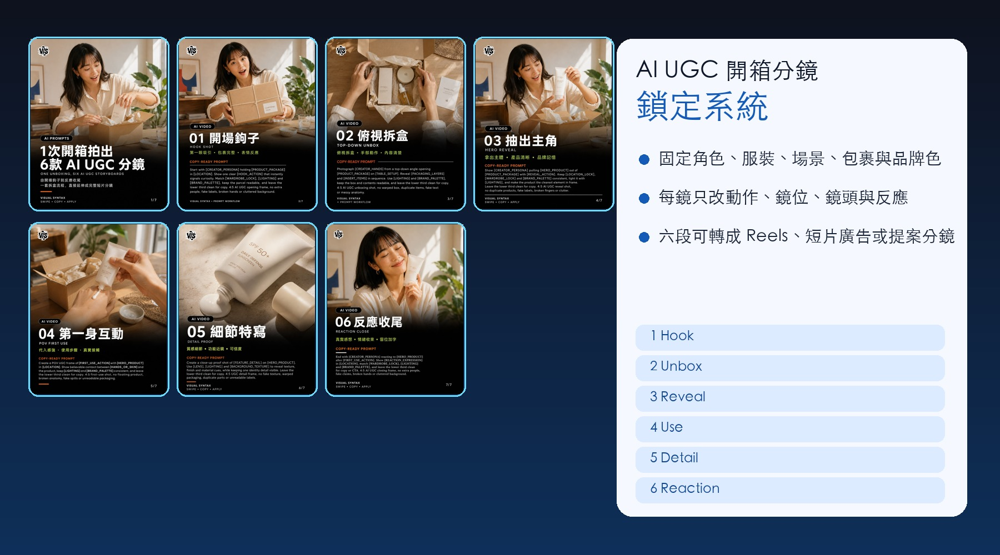
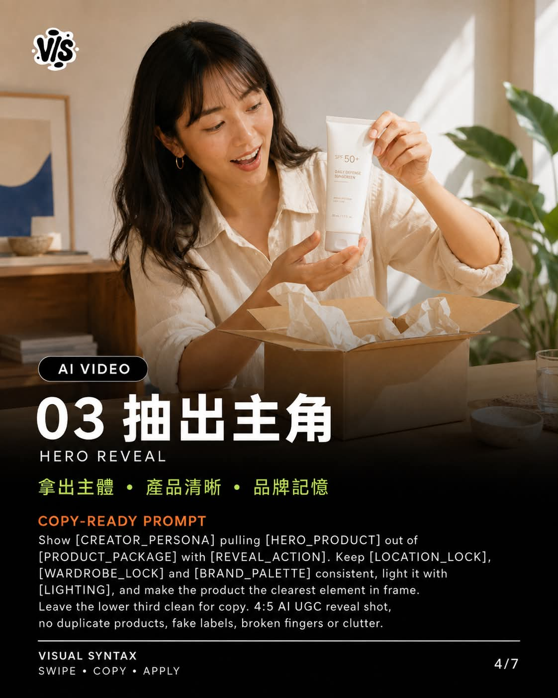
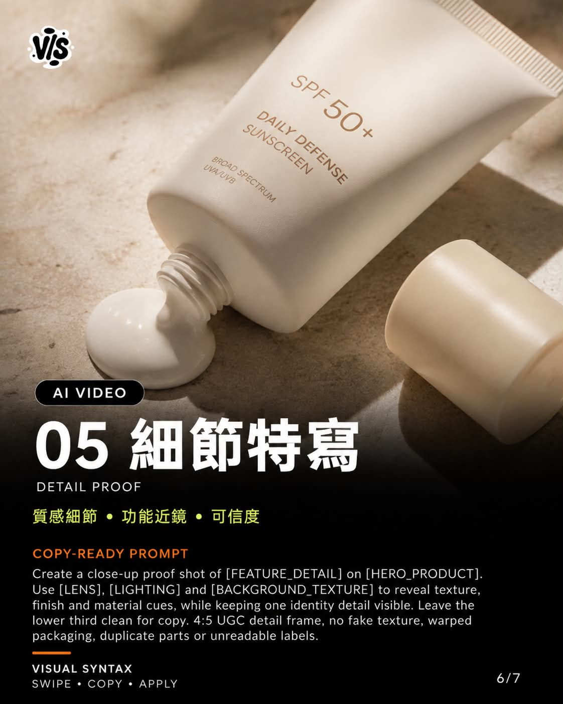

Threads｜VISUAL SYNTAX：AI UGC 開箱分鏡的角色與產品鎖定系統

為什麼保存
這則 Threads 值得歸檔，因為它指出 AI 生成 UGC 開箱素材最常見的問題：第一張圖很吸引人，但拆盒、拿出產品、實際使用到最後反應時，角色、包裝、產品與場景逐格漂移。真正的瓶頸不是畫面不夠漂亮，而是沒有先建立可重用的「鎖定系統」。
VISUAL SYNTAX 的方法把 AI 生成從「做六張好看的圖」改成「維持同一位創作者、同一個包裹、同一款產品的連續敘事」。這對電商、個人品牌、短影音廣告與提案分鏡都很實用。
可見資訊
- 來源：VISUAL SYNTAX（@visual_syntax.ai）
- Threads canonical：`https://www.threads.com/@visual_syntax.ai/post/DbrdDqvmvqO`
- 擷取時可見：約 2,035 次瀏覽、34 個互動、1 則回覆、40 個轉發/保存類互動。
- 圖片：公開頁可見 7 張 carousel 圖，本文已全部本地保存。貼文文字描述的是六個核心連續分鏡；第 7 張視為額外展示/封面或延伸 frame，不自行補推論。
核心方法：先鎖定，再逐鏡變化
貼文建議先固定這些不應漂移的元素：
| 鎖定變數 | 用途 |
|---|---|
| `[CREATOR_PERSONA]` | 固定創作者身分、年齡感、氣質、表情範圍。 |
| `[WARDROBE_LOCK]` | 固定服裝、髮型、配件，避免每張變成不同人。 |
| `[LOCATION_LOCK]` | 固定居家、桌面、光線、背景與色溫。 |
| `[PRODUCT_PACKAGE]` | 固定包裹外觀、拆盒層次與品牌包材。 |
| `[HERO_PRODUCT]` | 固定主產品外觀、尺寸、材質、Logo 與功能重點。 |
| `[BRAND_PALETTE]` | 固定品牌色、道具色與視覺語氣。 |
接著，每一鏡只調整：
- `[ACTION]`：動作，例如打開箱子、拿出產品、試用。
- `[CAMERA_ANGLE]`：鏡位，例如俯視、第一人稱、半身近景。
- `[LENS]`：鏡頭感，例如手機廣角、50mm 特寫、手持 vlog。
- `[REACTION_EXPRESSION]`：反應，例如好奇、驚喜、自然微笑、滿意點頭。
六個連續分鏡
貼文把 UGC 開箱拆成六個可轉成短影音的 story beats：
- **開場鉤子**：先用畫面建立好奇，讓觀眾想知道盒子裡是什麼。
- **俯視拆盒**：交代包裝層次、手部動作與內容物出現過程。
- **主角揭示**：讓產品成為視覺焦點，同時保留創作者反應。
- **第一身互動**：展示實際使用步驟，讓畫面像真實 UGC 而非棚拍。
- **細節特寫**：補充材質、功能、按鍵、質感或賣點證據。
- **反應收尾**：用自然表情與 CTA 完成情緒落點。
保存的 carousel 圖片


可重用提示詞骨架
```text
Create a realistic UGC unboxing sequence for a short-form product video.
LOCKED ELEMENTS
[CREATOR_PERSONA]: same creator throughout all frames; consistent face, age, skin tone, hairstyle, expression range, and body proportions.
[WARDROBE_LOCK]: same outfit, accessories, makeup, and hair styling throughout the full sequence.
[LOCATION_LOCK]: same room, table surface, lighting direction, background objects, and color temperature.
[PRODUCT_PACKAGE]: same shipping box, label placement, inner packaging, inserts, and reveal order.
[HERO_PRODUCT]: same product design, size, logo placement, material, color, screen/interface, and functional details.
[BRAND_PALETTE]: consistent colors, props, visual tone, and product category cues.
SHOT PLAN
- Hook shot: creator notices or receives the package, curiosity first.
- Overhead unboxing: hands open the package and reveal content layers.
- Hero reveal: creator lifts the product and makes it the visual focus.
- First-person interaction: show realistic usage steps from the creator's perspective.
- Detail macro: close-up of materials, functions, texture, buttons, screen, or product proof.
- Reaction / CTA: natural expression, honest-feeling reaction, and clear next action.
For each shot, only change:
[ACTION], [CAMERA_ANGLE], [LENS], [REACTION_EXPRESSION].
Do not redesign the creator, product, package, brand colors, or location between shots.
Keep the sequence realistic, casual, UGC-like, and suitable for Reels or short-form ads.
```
給欒帥的觀察重點
這篇可以當成 AI 影片生成的「一致性控制」樣本。它不是追求單張圖的美感，而是把短影音拆成可控變數：哪些要鎖定、哪些可以變化、每一鏡負責哪個敘事功能。
若未來要做課程宣傳、AI 工具示範、電商商品開箱或講師個人品牌素材，這套方法可直接轉成：
- Reels / Shorts / TikTok 分鏡腳本
- AI 圖像生成 prompt 模板
- 團隊拍攝前的 storyboard
- 商品頁或廣告提案的視覺流程
風險提醒
- AI 生成的 UGC 素材若模仿真人使用心得，應避免讓觀眾誤以為是真實消費者評價。
- 若使用真實品牌、Logo、包裝或人物肖像，需確認授權與平台廣告規範。
- AI 模型仍可能造成產品細節漂移，例如按鈕位置、Logo、接口、材質、尺寸不一致；正式投放前需人工校對。
- UGC 廣告重點是信任感，若畫面過度完美或反應過度表演化，反而會降低可信度。
- 若用於醫療、美容、保健、金融或兒童產品，需額外檢查廣告宣稱與法規限制。
適合保存的原因
這則案例把 AI UGC 從「生成素材」推進到「建立可重用工作流」：先鎖定角色、產品與場景，再用六個分鏡完成好奇、拆盒、揭示、使用、證據與 CTA。它是短影音廣告與 AI 生成影像結合時，很實用的一個方法模板。